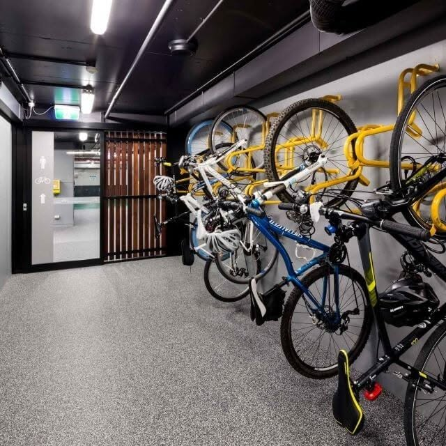

SAWO · Velo infrastruktūra
Velosipēdu nojumes
Galvenie SAWO nojumu modeļi vienuviet. Klikšķis turpina uz mūsu katalogu sadaļu, nevis atstāj lietotāju bez nākamā soļa.
Modeļi
No vienvietīgām līdz moduļu nojumēm

HOL
HOL vienvietīgā velo nojume
Velo nojume ar rūdīta stikla jumtu.
Apskatīt SAWO katalogus →
ARB
ARB dubultā velo nojume
Nojume ar trapecveida metāla jumtu.
Apskatīt SAWO katalogus →
GRJ
GRJ dubultā velo nojume
Novietne ar polikarbonāta sienām.
Apskatīt SAWO katalogus →
ARB
ARB velo nojume
Divu līmeņu velo novietne.
Apskatīt SAWO katalogus →
HOL
HOL dubultā velo nojume
Rūdītā stikla vai trapecveida loksnes jumts.
Apskatīt SAWO katalogus →
Skyflat
Skyflat vienvietīgā velo nojume
Moduļu velosipēdu novietne.
Apskatīt SAWO katalogus →Mexico
Mexico vienvietīgā velo nojume
Divu līmeņu velo novietne.
Apskatīt SAWO katalogus →
Quantum
Quantum velo nojume
Moduļu velosipēdu novietne ar vairākām izmēru variācijām.
Apskatīt SAWO katalogus →
SAWO
Individuāla dizaina nojumes
Projektam pielāgojami velo glabāšanas un novietošanas risinājumi.
Pieteikt projektu →Projektam
Palīdzēsim izvēlēties pareizo nojumi
Norādi velosipēdu skaitu, projekta vietu un vēlamo konstrukciju — palīdzēsim piemeklēt piemērotu SAWO risinājumu.